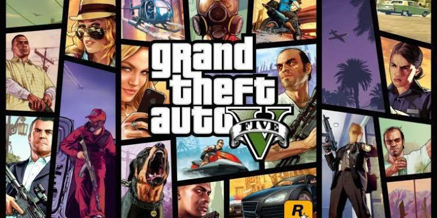

Bem-Vindo ao site sobre GTA V

Nesse site, iremos falar diversas informações sobre o GTA V, como a história, os personagens, os mistérios, entre outros.
O que é GTA V?
O GTA V é um jogo lançado em setembro de 2013 pela empresa de jogos chamada Rockstar. O jogo conta a história de 3 criminosos: Trevor, Franklin e Michael. Ele é muito popular e ocupa o segundo lugar do jogo eletrônico individual mais vendido de todos os tempos.
- Nome: Grand Theft Auto V (GTA V)
- Desenvolvedora: Rockstar North
- Publicadora: Rockstar Games
- Lançamento inicial: 17 de setembro de 2013
- Local da história: Los Santos e Blaine County, lugares fictícios inspirados principalmente em Los Angeles e na Califórnia.
- Gênero: Ação e aventura em mundo aberto.
- Modo de jogo: Possui campanha para um jogador e também o GTA Online, que permite jogar com outras pessoas.
- Personagens principais: Michael, Franklin e Trevor.
Sinopse
A história acompanha a vida de três criminosos de diferentes gerações em Los Santos: Michael De Santa, um ladrão de bancos aposentado que vive sob proteção de testemunhas; Franklin Clinton, um jovem malandro de rua em busca de oportunidades; e Trevor Philips, um psicopata violento e imprevisível.